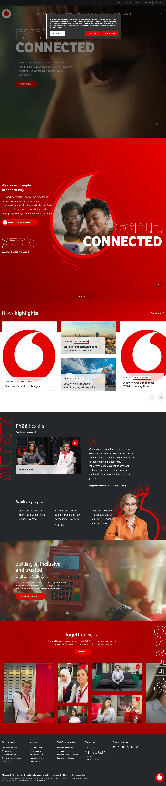

Vodafone 主题
Vodafone 的 Design.md 主题展示，围绕消费品牌、电商零售、品牌展示组织页面。
Global telecom brand. Monumental uppercase display, Vodafone Red chapter bands.
消费品牌电商零售品牌展示

来源
- 来源
- getdesign.md
- 镜像
- github:VoltAgent/awesome-design-md
- 网站
- https://vodafone.com/
- 详情
- https://getdesign.md/vodafone/design-md
色板
#e60000: #e60000#25282b: #25282b#ffffff: #ffffff#7e7e7e: #7e7e7e#bebebe: #bebebe#f2f2f2: #f2f2f2#000000: #000000#a0a0a0: #a0a0a0#fbbf24: #fbbf24#8a8a8a: #8a8a8a#0a0a0a: #0a0a0a#e0e0e0: #e0e0e0
字体
display: Vodafonebody: Vodafone Rgmono: ui-monospacehints: Vodafone,Vodafone Rg,ui-monospace,Helvetica Neue,Geist,Inter,mono-kickers
圆角
control: 6pxcard: 6pxpreview: 6pxpill: 9999pxsource: design-md
间距
xxs: 2pxxs: 4pxsm: 8pxmd: 12pxlg: 16pxxl: 20px2xl: 24px3xl: 32pxsource: design-md
使用建议
建议
- 建议：Reserve {colors.primary} Vodafone Red for primary CTAs and the {speechmark-logo-orb}. Every conversion target uses the red pill。
- 建议：Set hero headlines in {typography.display-hero} weight 800 UPPERCASE with tight {-1px} tracking. That stencil look IS the brand voice。
- 建议：Use {rounded.pill-lg} 60 px on every interactive pill. The brand never uses square corners on CTAs。
- 建议：Cycle page surfaces in {colors.ink} dark hero → {colors.canvas} light content → {colors.ink} footer. Surface contrast is the depth cue。
- 建议：Pair editorial portrait photography with the massive display headline overlay — that combination IS the brand's signature。
避免
- 避免：introduce a second accent colour. The brand operates with red + ink + grayscale only。
- 避免：render headlines in sentence case at hero scale. Hero display IS uppercase weight 800。
- 避免：render the primary CTA as a square rectangle. The 60 px pill is non-negotiable。
- 避免：给卡片添加柔和投影，层级应由表面对比和细分割线承担。
- 避免：substitute the speechmark logo orb with a wordmark or a different shape. The orb is the iconic mark。
查看 DESIGN.md